פשוט להצליח במתמטיקה › כל הנושאים › דמיון משולשים ותאלס
דמיון משולשים ותאלס – סרטוני הסבר ותרגול
22 סרטוני הסבר ותרגול בנושא דמיון משולשים ותאלס – לכיתה ט׳, שאלון 471, שאלון 571. כל נושא מוסבר מהקל אל הקשה: קודם הרעיון, אחר כך תרגילים, ובסוף שאלות בסגנון בגרות. הכול בחינם, בשיטת "פשוט להצליח".
רוצים לעקוב אחרי ההתקדמות?נרשמים בחינם, וכל סרטון שראיתם מסומן ✓. ממשיכים מכל מכשיר.
הצטרפות בחינם ←דמיון משולשים ותאלס – כיתה ט׳ כל הנושאים של כיתה ט׳ ←
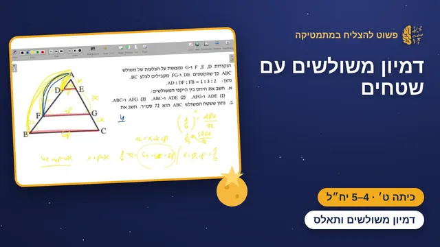
דמיון משולשים עם שטחים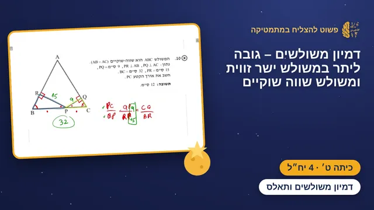
דמיון משולשים – גובה ליתר במשולש ישר זווית ומשולש שווה שוקיים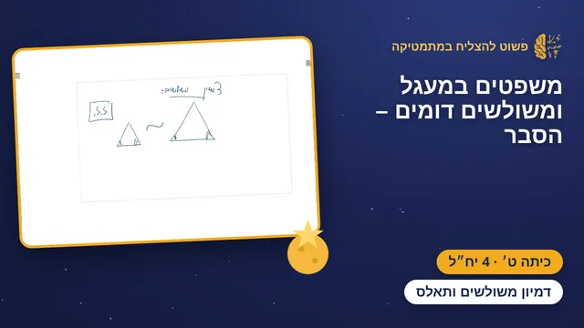
משפטים במעגל ומשולשים דומים – הסבר דמיון משולשים בצורת ״שעון חול״ – AB∥EF
דמיון משולשים בצורת ״שעון חול״ – AB∥EF דמיון משולשים – הסבר ותרגילים בסיסיים
דמיון משולשים – הסבר ותרגילים בסיסיים דמיון משולשים – יחס דמיון ואורכי צלעות
דמיון משולשים – יחס דמיון ואורכי צלעות מעוין עם ריבוע תרגיל מדהים 4 5 יח כיתה ט וי
מעוין עם ריבוע תרגיל מדהים 4 5 יח כיתה ט וידמיון משולשים ותאלס – שאלון 471 כל הנושאים של שאלון 471 ←
דמיון משולשים עם שטחיםדמיון משולשים – הסבר ותרגילים בסיסייםמעוין עם ריבוע תרגיל מדהים 4 5 יח כיתה ט וי תרגילי בסיס תאלס עם מספרים 2
תרגילי בסיס תאלס עם מספרים 2 משפט תאלס הסבר 4 5 יח
משפט תאלס הסבר 4 5 יח גאומטריה דמיון משולשים תרגילים שווים ממש כיתה יא 471 4 יח
גאומטריה דמיון משולשים תרגילים שווים ממש כיתה יא 471 4 יח גאומטריה דמיון משולשים – הסבר, הבנה ותרגילים בסיסיים כיתה יא 471 4 יח
גאומטריה דמיון משולשים – הסבר, הבנה ותרגילים בסיסיים כיתה יא 471 4 יח דמיון משולשים – גאומטריה
דמיון משולשים – גאומטריה
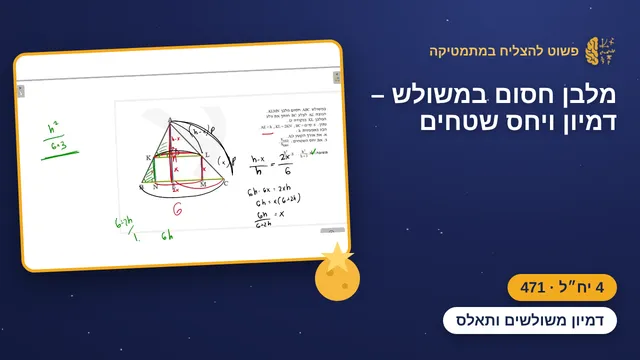
מלבן חסום במשולש – דמיון ויחס שטחים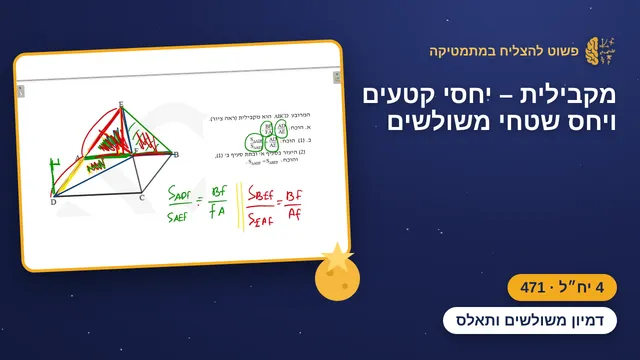
מקבילית – יחסי קטעים ויחס שטחי משולשיםדמיון משולשים – גובה ליתר במשולש ישר זווית ומשולש שווה שוקייםמשפטים במעגל ומשולשים דומים – הסברדמיון משולשים – הסבר ותרגילים בסיסייםמעוין עם ריבוע תרגיל מדהים 4 5 יח כיתה ט וי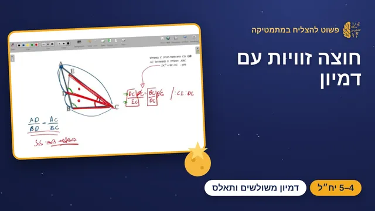
חוצה זוויות עם דמיון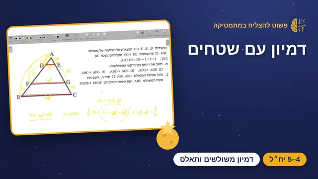
דמיון עם שטחים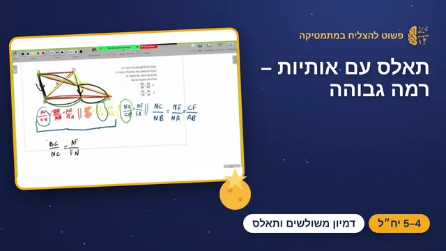
תאלס עם אותיות – רמה גבוההתרגילי בסיס תאלס עם מספרים 2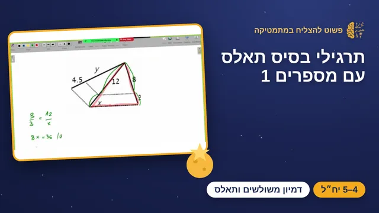
תרגילי בסיס תאלס עם מספרים 1משפט תאלס הסבר 4 5 יחגאומטריה דמיון משולשים תרגילים שווים ממש כיתה יא 471 4 יחגאומטריה דמיון משולשים – הסבר, הבנה ותרגילים בסיסיים כיתה יא 471 4 יחדמיון משולשים – גאומטריהדמיון משולשים ותאלס – שאלון 571 כל הנושאים של שאלון 571 ←
דמיון משולשים עם שטחיםמעוין עם ריבוע תרגיל מדהים 4 5 יח כיתה ט ויחוצה זוויות עם דמיוןדמיון עם שטחים מפגש תיכונים כולל קטע אמצעים ומשולשים דומים כיתה י 5 יח 2
מפגש תיכונים כולל קטע אמצעים ומשולשים דומים כיתה י 5 יח 2 מפגש תיכונים כולל קטע אמצעים ומשולשים דומים כיתה י 5 יח 3תרגילי בסיס תאלס עם מספרים 2תרגילי בסיס תאלס עם מספרים 1משפט תאלס הסבר 4 5 יחדמיון משולשים – גאומטריה
מפגש תיכונים כולל קטע אמצעים ומשולשים דומים כיתה י 5 יח 3תרגילי בסיס תאלס עם מספרים 2תרגילי בסיס תאלס עם מספרים 1משפט תאלס הסבר 4 5 יחדמיון משולשים – גאומטריה
מעוין עם ריבוע תרגיל מדהים 4 5 יח כיתה ט ויחוצה זוויות עם דמיוןדמיון עם שטחים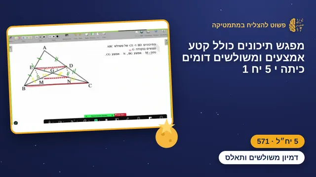
מפגש תיכונים כולל קטע אמצעים ומשולשים דומים כיתה י 5 יח 1מפגש תיכונים כולל קטע אמצעים ומשולשים דומים כיתה י 5 יח 2מפגש תיכונים כולל קטע אמצעים ומשולשים דומים כיתה י 5 יח 3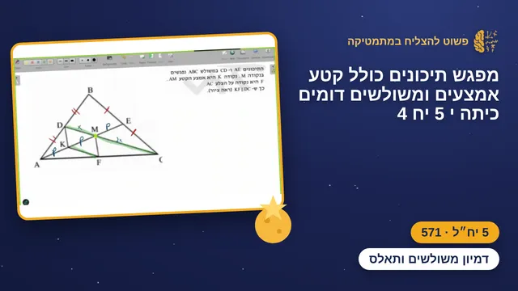
מפגש תיכונים כולל קטע אמצעים ומשולשים דומים כיתה י 5 יח 4תאלס עם אותיות – רמה גבוההתרגילי בסיס תאלס עם מספרים 2תרגילי בסיס תאלס עם מספרים 1משפט תאלס הסבר 4 5 יחדמיון משולשים – גאומטריה